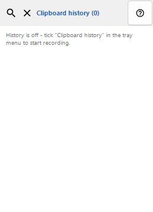
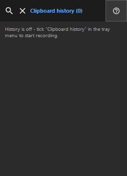

Clipboard history
What this is for
History is stored locally only and encrypted with Windows DPAPI for your account.


In this order
Read the numbered elements, choose the values you need, then use the window’s command to continue.